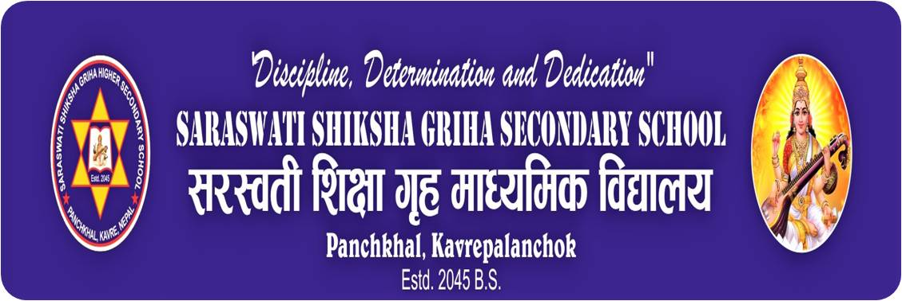
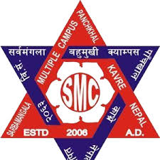
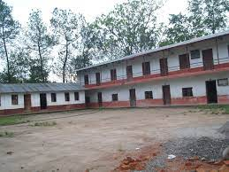
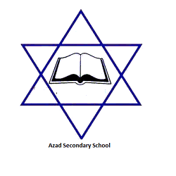

Home
Events
Our Stories
Volunteer
Contact Us
Embark on unforgettable moments with Sahayata events - where every gathering is a celebration of community and inspiration

Saraswati Shikshya Griha Secondary School
Principal
2024/04/24
Apply

Sarbamangala Multiple Campus
Keshav Prasad Kafle
2024/04/24
Apply
Golden Future Secondary School
Principal
2024/04/24
Apply

Jorpati Secondary School
Principal
2024/04/24
Apply

Shree Azad Higher Secondary School
Baikuntha Prasad Neupane
2024/04/24
Apply
Apply For A Request